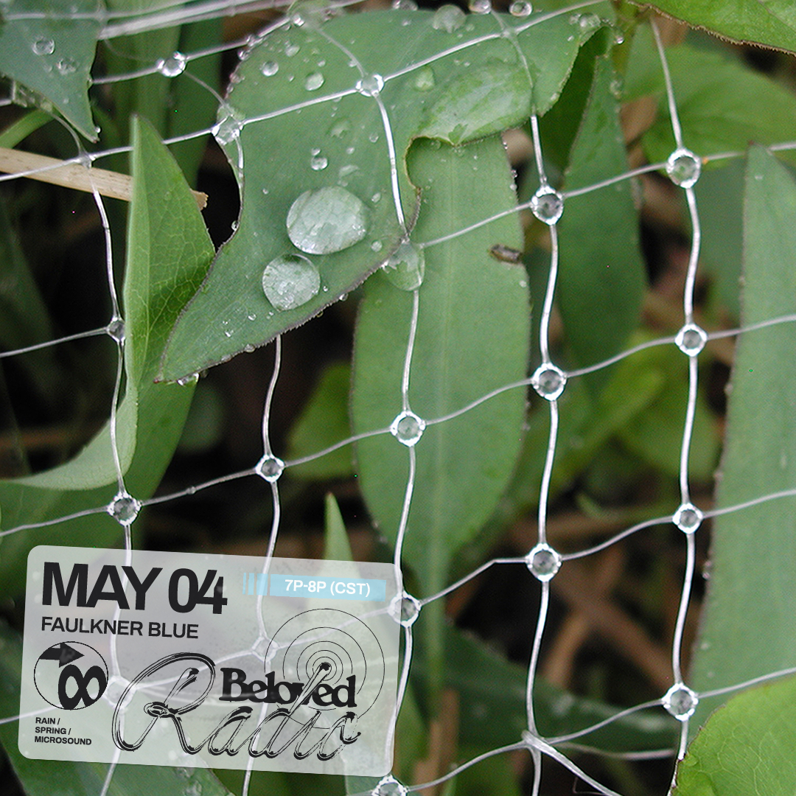
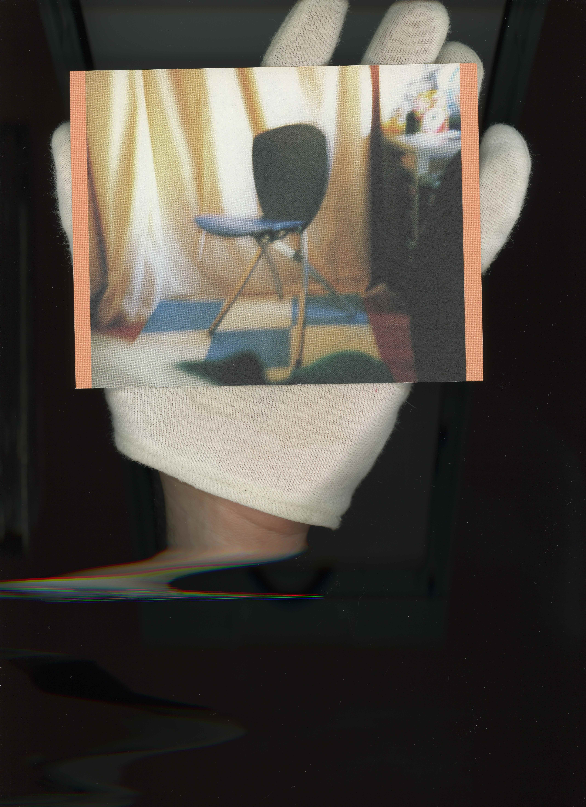
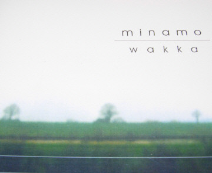
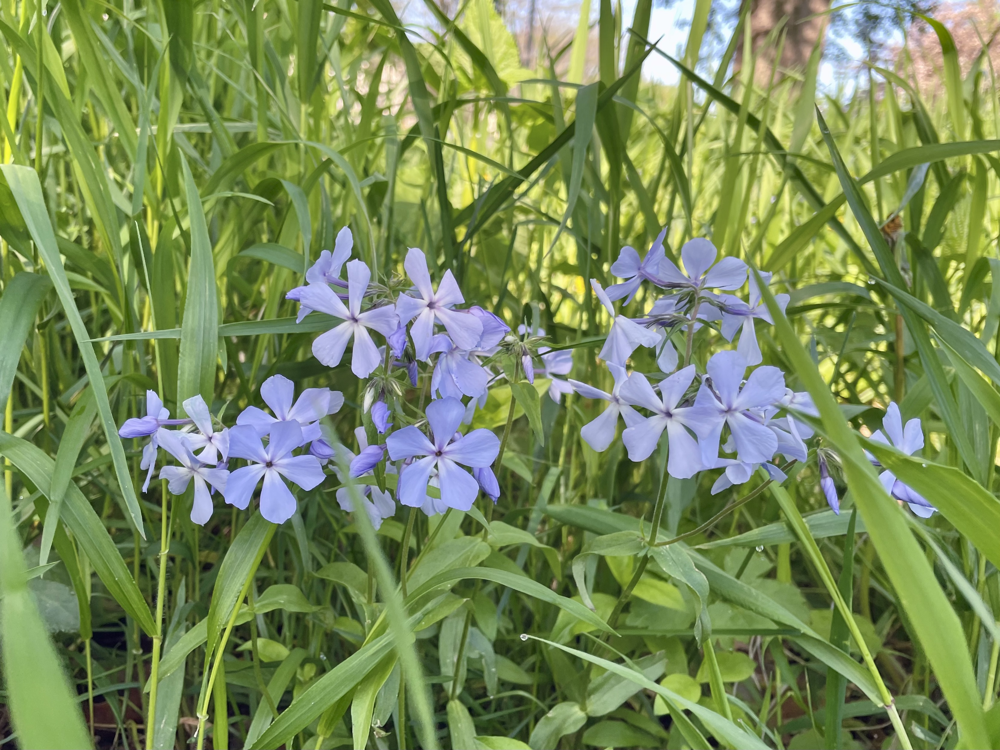
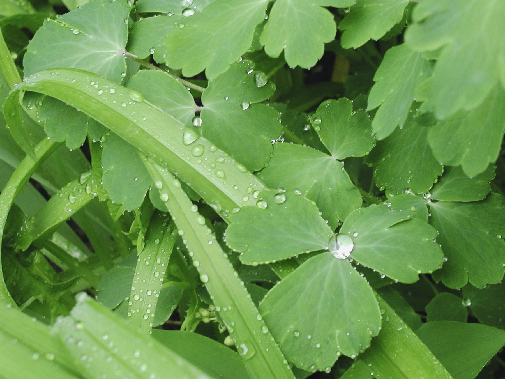

catch me on beloved.wtf saturday 05/04 at 7p CT
tracklist
re: thePretender on soulseek
coming to appreciate a seminal work: stil.

Minamo - Wakka
love this album cover, its label, the artist, not to mention the music itself
wild blue Phlox


today i remembered the fundamental joy of a spring rain